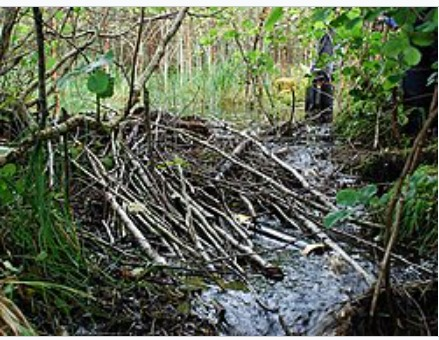
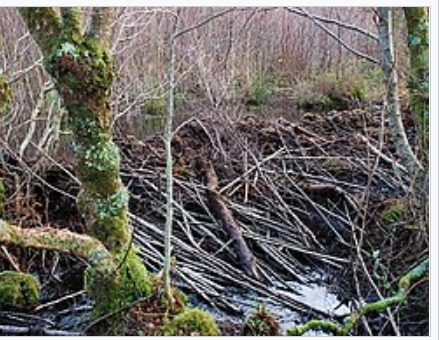

BEBRAS 運算思維
運算思維與題型演練
🎯 學習目標
- 認識運算思維（Computational Thinking）常用的四種解題方式
- 了解 BEBRAS 國際運算思維挑戰賽
- 透過題型練習培養拆解與解題的能力
01認識 BEBRAS
BEBRAS（海狸）是一項起源於立陶宛、風行全球的國際運算思維挑戰賽。題目多為情境式趣味題，不需先會寫程式，重點在推理與邏輯。
教育部把運算思維（Computational Thinking）列為十二年國民基本教育（108 課綱）「科技領域」的核心素養，透過問題分解、樣式識別、抽象化與演算法規劃等邏輯，培養學生利用資訊科技工具解決生活與學習問題的能力。這正是本課程與 BEBRAS 練習想幫大家培養的能力。
海狸以「勤奮、聰明地築水壩」聞名，正好象徵運算思維——用巧妙的方法解決複雜的工程問題。
不過這裡有個常見的翻譯／命名小陷阱：BEBRAS 是立陶宛文的「beaver」，指的就是會築水壩、尾巴扁平像船槳的那種齧齒動物——牠正式的中文名其實是「河狸」（英文 Beaver）。比賽常被翻成「海狸」，但嚴格來說，很多資料裡的「海狸／海狸鼠」指的是另一種尾巴像老鼠、原產南美的動物「Coypu（Nutria）」。所以 BEBRAS 的吉祥物，其實就是築壩高手河狸（Beaver），只是中文常沿用「海狸」這個俗稱。
💡 延伸小新聞：曾有報導寫「捷克某水壩籌備七年還沒動工，海狸兩晚就建好、省下四千多萬元」——其實真正的築壩高手是河狸（Beaver）喔！（延伸閱讀：國家地理 ↗）
🦫 這就是會築壩的「河狸（Beaver）」本尊：

美洲河狸 Castor canadensis，尾巴扁平像船槳
🏗️ 河狸的「水壩工程」——同一座水壩，四個月就變大了：


✏️ 課堂練習（暖身：先做這裡，再往下看內容、最後做表單）
這幾題是本單元的暖身。先自己想想看（可先作答、再點開對照解答），有感覺之後再往下閱讀內容，最後到表單作答。這些解題方式不用背，會用就好。
- 運算思維常用的四種解題方式是哪四個？
- 數列 2, 4, 6, 8, … 第 20 個數字是多少？（找規律）
- 有個有名的冷笑話：「怎麼把大象放進冰箱？」答案是三個步驟——① 打開冰箱門 ② 把大象放進去 ③ 關上冰箱門。這其實就是「演算法」（照著步驟做）。
換你試試：「怎麼把長頸鹿放進冰箱？」請寫出步驟（小提示：冰箱裡已經有一隻大象了）。
- 拆解、找規律、抽象化、演算法（會用就好，不必背名詞）。
- 規律是「第 n 個 = 2n」，第 20 個 = 40。
- 長頸鹿版要多一步，因為前一個狀態（冰箱裡已經有大象）會影響接下來的動作：① 打開冰箱門 ② 把大象拿出來 ③ 把長頸鹿脖子折一折 ④ 把長頸鹿放進去 ⑤ 關上冰箱門。
😆 加碼：森林之王獅子召開森林大會，卻有一種動物沒到，是誰？——長頸鹿，因為牠還在冰箱裡！
02什麼是運算思維？
運算思維是一種像電腦科學家一樣思考的解題方法，重點不在寫程式，而在有系統地分析、解決問題。它不是要背的名詞，而是四種好用的解題方式，遇到難題時可以拿出來用：
🧩 拆解 Decomposition
把大問題拆成一個個小問題，各個擊破。
🔍 找規律 Pattern Recognition
找出問題中重複出現的規律與相似之處。
🎯 抽象化 Abstraction
忽略無關細節，只保留解決問題所需的關鍵資訊。
📝 演算法 Algorithm
設計一步步、照著做就能得到答案的步驟。
不用先會寫程式，重點是「有系統地想」——其實就是把上面四種方式串起來用：① 讀懂題目、拆解問題（到底要我求什麼？）→ ② 抽象化，丟掉故事包裝、只留關鍵，找出規律 → ③ 設計步驟（演算法），不確定就拿小例子先試一遍 → ④ 驗證：把答案代回去檢查有沒有違反規則。
題目：小麥手邊有八串香蕉：4、5、8、3、6、8、4、4（加起來 42）；媽媽手邊有五串：1、2、3、4、5。要在不拆開任何一串的情況下，把小麥的香蕉平均分裝到 3 個背包；如果需要，可以請媽媽再給一串加進來。請問分得成嗎？
怎麼用這四種方式想：
拆解——先把所有數量加起來算總數；
找規律——要平均分成 3 份，總數一定得是 3 的倍數；
演算法——如果不是 3 的倍數，就看加媽媽的哪一串，能剛好變成 3 的倍數、又真的能分成相等三堆；
驗證——把分好的三堆各自加起來，確認每堆一樣多、且沒有拆開任何一串。
（完整算式與答案在本頁最下方「表單題目解答」的 🍌 香蕉背包）
- 運算思維奠基論文（英文）：Jeannette M. Wing,「Computational Thinking」, Communications of the ACM, 2006。
- 臺灣師大 Bebras 國際運算思維挑戰賽 官網（中文）：bebras.csie.ntnu.edu.tw
- 教育部 運算思維推動計畫（中文）：compthinking.csie.ntnu.edu.tw
- 呂聰賢《運算思維簡報》（中文 PDF，可搜尋取得）。
03表單題目解答
下面是表單各題的詳解。建議先自己作答，再點開對照。
💧 灑水器 —— 答案：25 台
每台灑水器只能覆蓋一塊同一種作物的正方形（可用 4×4、2×2 或 1×1，大正方形較省），要把整片 8×8 農場不重疊地蓋滿，求最少台數。作物分佈其實很破碎，能塞進的大正方形不多，所以要用很多小正方形補。下圖是用程式算出的最省鋪法：只有 1 個 4×4（左上玉米）、8 個 2×2、16 個 1×1，合計 25 台。分作物看：🌽玉米 5、🍎蘋果 5、🍇葡萄 6、🍊橘子 9 台。
🧮 窮舉法（暴力破解）會怎樣：把每一格用 1×1／2×2／4×4 的各種鋪法全部試一遍，組合數是天文數字，電腦硬試也要很久；用「大正方形優先、依作物切割」的策略，一下就找到最省的 25 台。
🍌 香蕉背包 —— 答案：D（媽媽給三根的香蕉串）
小麥八串是 4、5、8、3、6、8、4、4，加起來 42（本身就是 3 的倍數）。但 42÷3＝14，在不拆開任何一串的條件下卻湊不出三個都剛好 14 的背包。所以要請媽媽加一串——加入後總數仍要是 3 的倍數才分得成：媽媽的五串 1、2、3、4、5 中，只有加「3」能維持 3 的倍數（42＋3＝45，每包 15）；加 1、2、4、5 都會破壞整除。加了 3 之後就分得出來：8＋4＋3、8＋4＋3、6＋5＋4，三個背包都是 15。所以答案 D。
🧮 窮舉法（暴力破解）會怎樣：把 8 串各自丟進 3 個背包，共有 3⁸ ＝ 6561 種分法，再乘上「跟媽媽拿哪一串」5 種 ≈ 3 萬多種都要試；用「總和一定要是 3 的倍數」這條規律，一步就把大部分不可能的情況篩掉，快很多。
🚆 列車 —— 答案：B
規則：主線軌道與每個車庫最多只能放 3 輛；OUT／IN 都從「靠主線那一端」進出（像堆疊）。目標是把 1、2、3 由左至右放進車庫1。因為車庫1原本有 5 號、且最多放 3 輛，要先把 5 移走，再依序放 1、2、3。
- A 只放進 1、2，3 號還卡在車庫3，沒完成。
- C 中途把 7 號誤放進車庫1，順序錯。
- D 讓主線同時出現 4 輛車，違反「不能超過 3 輛」。
- B 剛好用 IN(2) 先把擋路的 6 號暫存到車庫2，再取出 3 號放進車庫1，全程沒超過 3 輛 ✓。
答案 B。
🧮 窮舉法會怎樣：把每一步能做的 OUT／IN 操作全部展開成一棵樹，會指數成長、上千種以上；靠「主線與每個車庫都不能超過 3 輛」這條規則一路剪枝，合法路線其實剩沒幾條。
🏔️ 爬山訓練 第一題（誰最後下山）—— 答案：1 號
規則：每遇到一道「牆（階）」，最前面的海狸留下扶梯子，其他人先上；最後扶梯子的人再上去，並倒著排到隊伍最後面。下山依相同順序，所以隊伍最後一個就是最後下山的。6 隻海狸 123456，不論山有幾階，扶梯子的都是最前面幾號、最後倒序接到隊尾，倒序的最後一定是 1 號 → 最後下山的是 1 號。
🏔️ 爬山訓練 第二題（登 3 座山的抵達順序）—— 答案：365412
萬用公式：一座有 k 道牆（k 階）的山，會把「最前面 k 隻」倒過來丟到隊尾，其餘往前遞補：
新隊伍 ＝ 〔第 k+1 隻以後照原順序〕＋〔前 k 隻倒序〕。三座山的階數為 3、4、2，出發 123456 依序套用：
- 第一座（3 階）：123456 → 456321（前 3 隻 123 倒序接到隊尾）
- 第二座（4 階）：456321 → 213654（前 4 隻 4563 倒序接到隊尾）
- 第三座（2 階）：213654 → 365412（前 2 隻 21 倒序接到隊尾）
所以抵達第三座山頂時的排序是 365412。
🧮 這題照規則「模擬」一次（三座山各套一次倒序）就能得到答案，根本不必窮舉；真要窮舉，6 隻海狸的排列有 6! ＝ 720 種要一一比對。
🥾 徒步旅行 —— 答案：6
米亞每天走 1 或 2 個路段，而且每晚只能睡在房子（A～E）。用拆解把整段行程切成三小段，各段走法數相乘：
- ① 起點 → B：2 種（就是圖上畫的路線 1、路線 2）
- ② B → C：只有 1 種
- ③ C → 終點：3 種（C→D→E→終點、C→E→終點、C→D→終點）
所以共 2 × 1 × 3 ＝ 6 種走法，答案 6。
🧮 窮舉法會怎樣：把「每天走 1 或 2 段」的所有走法一條一條列出來數，會隨路程指數成長；用「到每個點的走法數 ＝ 前一點 ＋ 前兩點」的遞推（像費氏數列），一次就數完。
🏆 淘汰賽 —— 答案：Beth（貝絲）
8 隊單淘汰，每隊在總表的出現次數 ＝ 1 +（贏的場數）。正確的紀錄要同時通過兩道關卡：
- 次數分布：必須剛好是「一個 4（冠軍）、一個 3（亞軍）、兩個 2（四強）、四個 1（首輪淘汰）」。
- 與賽程一致：光是數字對還不夠——出現 4 次的隊必須真的能沿著賽程表（第一輪 1–8、5–4、3–6、7–2）一路獲勝到冠軍；出現 3 次的要是它在決賽擊敗的對手，且兩人分屬上、下半區；出現 2 次的兩隊要各在一個半區打進四強。把每一欄的數字「還原成一張對戰樹」去驗證。
四位海狸逐一還原後，只有 Beth 的紀錄能拼出一張前後不矛盾的賽程樹（其他人會出現「同一組首輪對手兩隊都晉級」之類的矛盾）。答案 Beth。
🧮 窮舉法會怎樣：8 隊的可能排列有 8! ＝ 40320 種要一一還原比對；用「出現次數 ＝ 1 ＋ 贏的場數」直接檢查每筆紀錄，快很多。
🚚 果汁車 —— 答案：D
目標：新增 1 台果汁車後，全城每個路口都在某台果汁車的 2 步內（最多經過 1 個中間路口就能買到）。做法：先標出現有果汁車能涵蓋（2 步內）的路口，找出還沒被涵蓋的「空白區」，再看 A／B／C／D 四個候選位置，哪一個放下去能把剩下的空白路口全部補進 2 步內。答案是放在 D——只有 D 能讓所有路口都被涵蓋，A／B／C 都各自漏掉至少一個路口。
🧮 窮舉法會怎樣：把 A／B／C／D 四個候選位置都放放看，再檢查是不是「每個路口都在 2 條街內」；候選少時可行，但每一個都要掃過全城所有路口。
🧺 小艾的任務 —— 答案：C（39 分鐘）
要跑五金行、藥房、市場三處，從家出發、完成後直接回家，這是一個最短路線問題：把地圖畫成節點與帶權重的邊，比較「不同造訪順序＋每段走哪條路」的總花費，取最小值。最短走法是 家→市場→五金行→藥房→家，步行 36 分（家→市場 4；市場經麵包店到五金行 6＋3；五金行經麵包店·教堂·學校到藥房 3＋4＋4＋3；藥房經學校回家 3＋6），再加三次採買 3 分 ＝ 39 分鐘，答案 C（比題目示範的 41 分少 2 分）。
🧮 窮舉法會怎樣：3 個要採買的點有 3! ＝ 6 種造訪順序，一一算總時間取最小就好；但點一多，n 個點就有約 (n−1)!÷2 種順序，會爆炸性成長——這正是有名的「旅行推銷員問題（TSP）」。